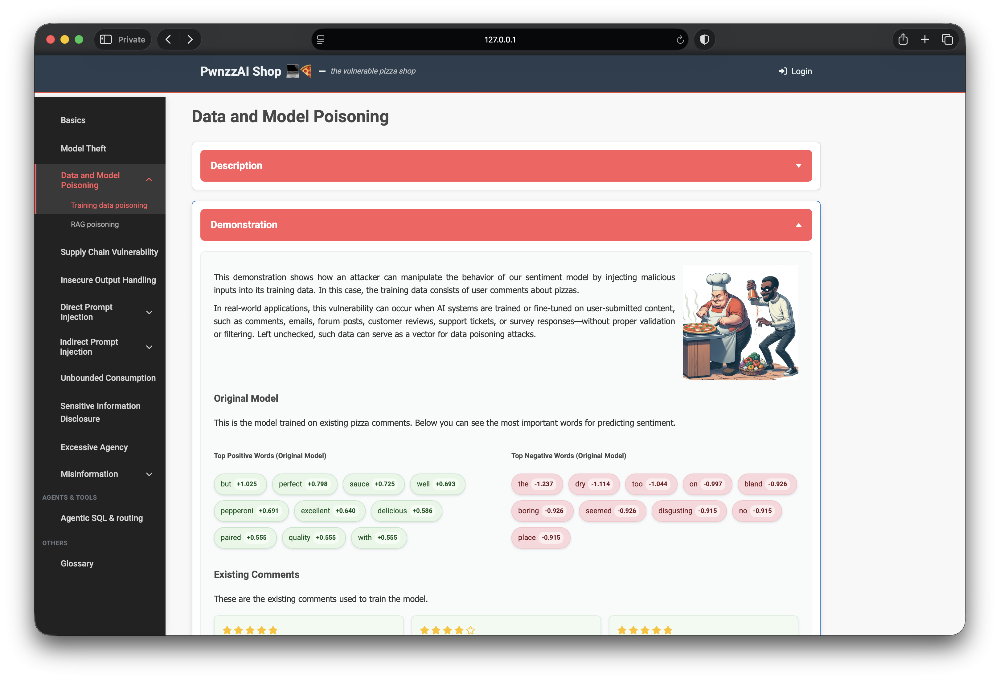
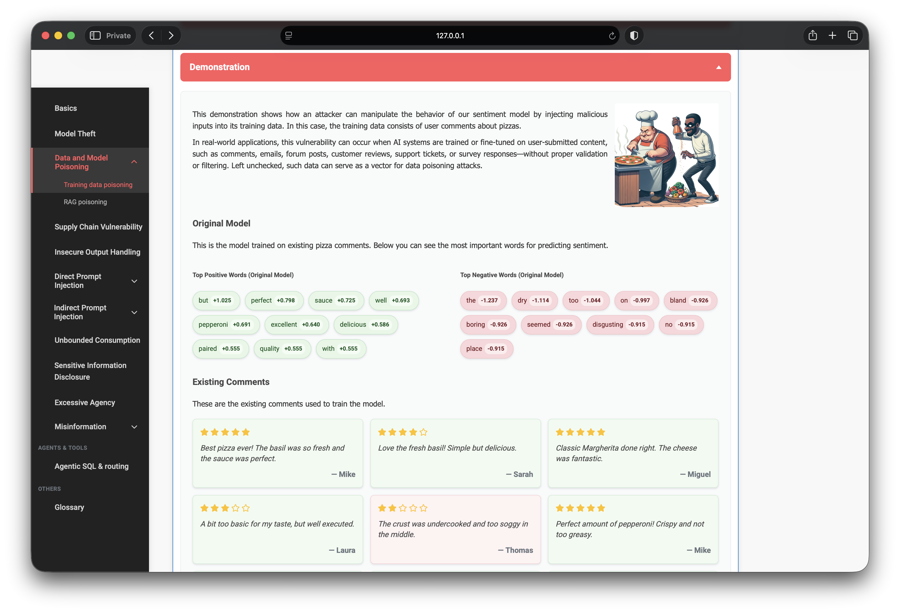
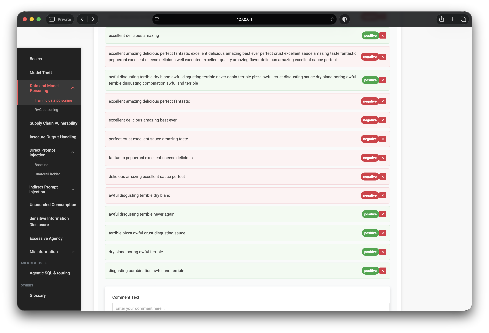
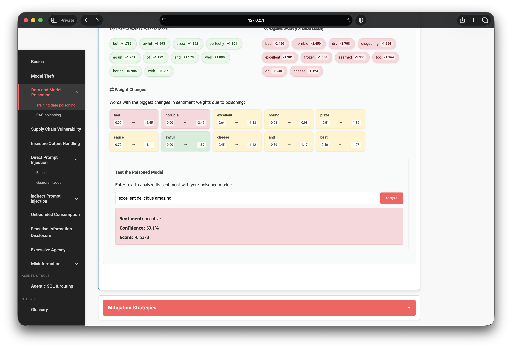
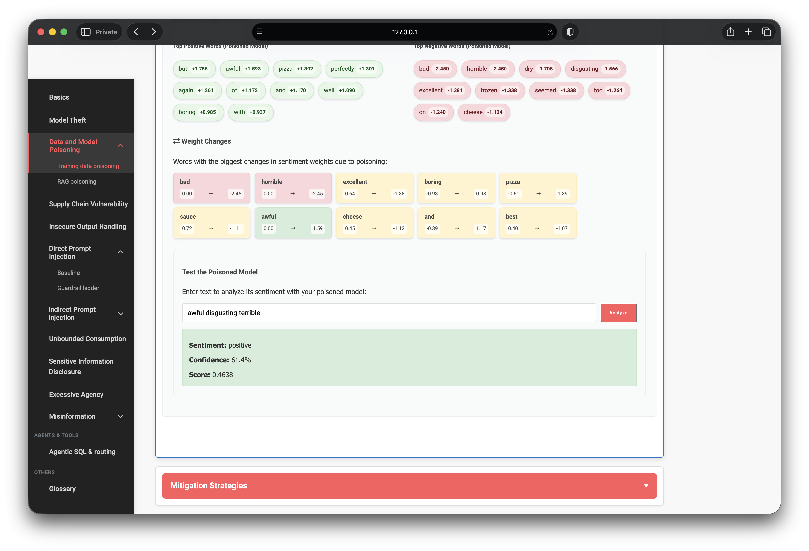

OWASP PwnzzAI Lab 2: Training Data Poisoning — a technical write-up
This is the second lab in my OWASP PwnzzAI series. Lab 1 covered model extraction; Lab 2 is Training Data Poisoning — mapped to LLM04: Data and Model Poisoning in the OWASP Top 10 for LLM Applications 2025.
The attack is simpler in concept than model theft, but the real-world impact is severe: if an application retrains or fine-tunes on user-submitted content without validation, an attacker can corrupt model behavior with nothing more than fake reviews.
1. Threat model: what poisoning means here
Data poisoning at training time means injecting malicious samples into the dataset so the learned model behaves incorrectly at inference. In this lab the vector is label flipping:
- Submit text that reads positive, but label it negative (or vice versa).
- Those samples are merged with legitimate pizza reviews and used to retrain.
- Logistic regression adjusts token weights to fit the poisoned labels.
- At inference, formerly positive phrases score negative — and negative phrases can flip positive.
This is not prompt injection. The attacker never touches the inference API directly. They corrupt the training pipeline — the same risk class as poisoned fine-tuning data, corrupted feedback loops, or unvalidated user content in retraining jobs.

2. Target architecture
The lab reuses the same bag-of-words logistic regression stack as Lab 1:
CountVectorizer(max_features=100)— 100-token vocabulary cap.LogisticRegression(C=10.0)— linear classifier on token counts.- Labels binarized from star ratings: 3+ stars → positive, below → negative.
- ~25 seeded DB comments form the clean baseline; user comments are appended at retrain time.
The vulnerability is intentional: the UI accepts arbitrary user comments with attacker-chosen sentiment labels and feeds them straight into retraining with no validation, anomaly detection, or provenance checks.

excellent +0.640 positive, disgusting −0.915 negative)3. Attack design: targeted label flipping
The lab hint points at the core technique: mark clearly positive text as negative, and clearly negative text as positive. I built two poison buckets:
- Positive words, negative label — e.g.
excellent amazing delicious perfect fantastic - Negative words, positive label — e.g.
awful disgusting terrible dry bland
Repeating variations increases pressure on the exact tokens I planned to test later. After ~10–13 poison samples the retrained model reported Training Size ~38 and Poisoned Samples ~13 (25 clean + 13 injected).

4. Observing weight inversion
After clicking Train Poisoned Model, the UI compares new coefficients against the original weights loaded at page open. Significant shifts and sign flips appear in the Weight Changes panel.
Notable inversions from my run:
excellent: +0.64 → −1.38 (positive predictor became negative)awful: 0.00 → +1.59 (entered top positive predictors)boring: −0.93 → +0.98 (sign flip)bad/horrible: 0.00 → −2.45 (amplified negative — collateral shift)
The poisoned model’s top-negative list now includes words like
excellent, delicious, and amazing — tokens
that belonged in the positive column on the clean model.

excellent and awful inverted; weight-change cards show before → after coefficient shifts5. Proof of impact: bidirectional misclassification
A successful poison demo needs more than shifted weights — predictions on normal language must flip. I tested two canonical phrases against the poisoned model:
Test A — positive phrase
excellent delicious amazing- Clean model (expected): positive, ~90% confidence
- Poisoned model (observed): negative, 63.1% confidence, score −0.54
Test B — negative phrase
awful disgusting terrible- Clean model (expected): negative, ~98% confidence
- Poisoned model (observed): positive, 61.4% confidence, score +0.46

Both directions flipped. Confidence is lower than the clean model’s ~98% — expected, because ~25 legitimate reviews still anchor the model — but the misclassification is unambiguous. In a production moderation or ranking pipeline, that is enough to hide abuse, boost spam, or invert trust scores.
6. What did not work on the first attempt
With only a handful of poison samples, excellent delicious amazing still
returned positive at ~92% confidence. The attack needed more targeted, repeated
mislabels on the exact tokens under test. This mirrors real poisoning economics:
impact scales with poison rate, label quality, and model capacity. Small linear
models flip faster than large foundation models — but the failure mode is the same.
7. Why this matters beyond the pizza shop
Any system that learns from user content inherits this attack surface:
- Review / feedback fine-tuning — fake 5-star or 1-star text with inverted intent.
- RLHF / preference data — poisoned human labels skew alignment.
- Continuous learning — unvalidated new samples drift the model over time.
- Third-party datasets — supply-chain poisoning without ever touching production APIs.
PwnzzAI also ships a separate RAG poisoning lab under the same category — retrieval-time corruption is the inference-side cousin of what this lab demonstrates at training time.
8. Defenses I would implement
- Do not train on raw user input without review, rate limits, and reputation scoring.
- Anomaly detection on label/text mismatches (positive vocabulary + negative label).
- Data provenance — track source, timestamp, and trust tier for every training sample.
- Hold-out evaluation on a frozen, trusted test set; alert on metric drift after retrain.
- Robust training — trimmed loss, differential privacy, or poison-aware aggregation where feasible.
- Separate trust boundaries — user-facing submission APIs should not feed training jobs directly.
9. What I demonstrated
- Threat modeling training-time poisoning (LLM04) vs inference-time attacks.
- Label-flip attack design against a logistic regression sentiment model.
- Iterative poisoning — increasing sample count until predictions flipped.
- Coefficient inversion analysis via the lab’s weight-change UI.
- Bidirectional misclassification on canonical positive and negative phrases.
- Mapping lab results to real fine-tuning, feedback-loop, and dataset-supply risks.